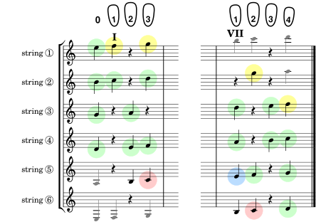

These two notes put you at the top of the common range for positions I and VII.
Scale 7. The high fives.
Scale 8. High major and diminished triads.
The boxes below automatically keep track of which exercises you've seen in this group (you get a gold star for each exercise you visit). And clicking on a box will take you to that exercise (you can see the exercise number by hovering over a box and looking at the url displayed). So all this lets you pick up where you left off in your last session, or go on to some random exercise you haven't seen yet. Courtesy of your browser history.